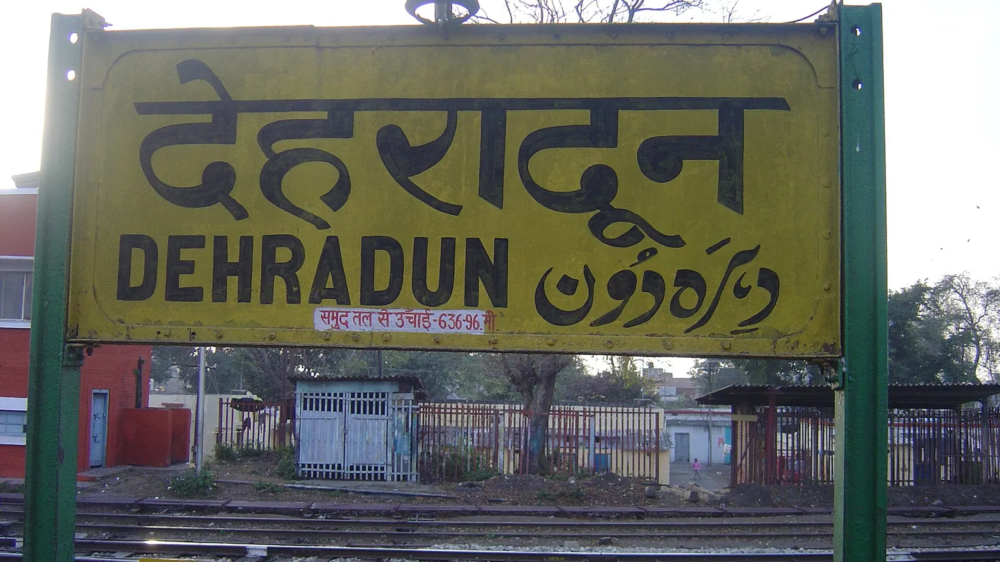

Har Ki Dun is one of the gentlest high-Himalayan treks in India and one of the most beautiful. From the road head at Sankri you walk up the Supin River through walnut, pine and cedar, past the old wooden village of Osla, to a broad meadow facing Swargarohini, the 'stairway to heaven' of the Mahabharata. A professional trek leader, cook and support team look after the camps, and all meals are vegetarian. It suits fit first-time trekkers aged about 12 and up.
See it for yourself
Photos from the journey



Where you go
The journey on one map

Day by day, in short
Daily travel brief
Distances are by road for the whole day. The full plan with timings comes with your detailed itinerary.
-
1
-
2
Taluka and the walk along the Supin River
- Trek along the Supin River: proper trekking shoes with ankle support, not sports shoes.
- Drink three litres of water today and keep the pace slow and steady.
-
3
Osla village and the climb to Kalkatiyadhar
- Climb to Osla: osla's Someshwar temple and homes are private and sacred.
- Tell your trek leader at once about a headache, nausea or breathlessness.
-
4
Har Ki Dun valley and Marinda Tal
- This is the longest day.
-
5
Down through Osla to Puani Garat
- Use trekking poles on the way down: they save your knees.
-
6
Back to Taluka and Sankri
- A small thank-you for the cook and support team is customary.
-
7
Sankri back to Dehradun
- Drive to Dehradun: book onward trains or flights for after 20:00, or the next day.
- A night in Dehradun or Mussoorie after the trek can be added.
Local know-how
Travel hacks from our desk
Packing for the trek
Trekking shoes with ankle support, a warm down jacket, thermals, a rain jacket, cap, gloves, a 30 to 40 litre daypack, two water bottles, sunscreen and a head torch. Nights are cold even in June.
Leave no trace
Carry all plastic back down. The valley is part of Govind Wildlife Sanctuary, and camping in the Har Ki Dun meadow itself is not allowed.
UPI, cards and cash
UPI works almost everywhere, even at small stalls. Keep some cash in INR 100 and 200 notes for temples, parking, tips and places where the network is weak.
Temple and shrine etiquette
Cover shoulders and knees. Remove shoes where asked, and carry socks for hot stone floors. Leather belts and bags are not allowed inside some Jain and Hindu temples. Ask before photographing people and inside shrines.
Water and street food
Drink sealed bottled or filtered water only. Choose busy stalls where food is cooked in front of you, and skip cut fruit and ice from roadside stalls.
Driving times
Indian roads are slower than the kilometres suggest: plan on 40 to 50 km an hour on highways and much less in hills and towns. Your driver's breaks and meal stops are built into the timings.
Plugs and tipping
Plugs are Indian three-pin and two-pin, 230 volts. Tipping drivers and guides about INR 300 to 500 a day is appreciated.
When to go
Best time to visit for this journey
October: crisp, clear mountain views after the monsoon.
April to June for rhododendrons and long days; September to November for the clearest views after the monsoon. Avoid July and August (landslides). In December to March the upper trail is under snow and only experienced winter trekkers should go.
The package
What's included
Included
- Dehradun to Dehradun road transfers, including the Sankri to Taluka jeep both ways
- 2 nights in Sankri and 4 nights in tented camps
- All vegetarian meals on the trek
- Professional trek leader, cook and support staff
- Mules for camping equipment
- First-aid kit with oximeter and oxygen
- Forest entry fees for Indian nationals
- 24/7 support from Blue Diamond Voyage
Not included
- Porter or mule for personal bags (available on request)
- Forest fees for foreign nationals
- Travel and trek insurance
- Tips, laundry, phone calls and personal medicines
- Costs from bad weather, landslides, road blocks or evacuation
The detailed itinerary
Some journeys are planned. Ours are crafted.
The full 7-day plan is ready: hour-by-hour timings, drive times, temple dress codes, food for your diet and a route map for every day. Tell us your dates and your city, and we'll send it to you on WhatsApp, shaped around you.
- Hour-by-hour timings
- A route map for every day
- Hotel and room details
- Visa and entry steps
- Vegetarian and Jain dining
24/7 travel desk+91 97148 59797+91 98242 21400
Photo and map credits
- Dehradun Railway Station: Superfast1111, CC BY-SA 3.0, via Wikimedia Commons
- Taluka: REVENUE DEPARTMENT, GUJARAT, CC0, via Wikimedia Commons
- Osla: vorwerk, CC BY-SA 3.0, via Wikimedia Commons
- Har Ki Dun: Wollex, CC BY-SA 3.0, via Wikimedia Commons
- Osla: vorwerk, CC BY-SA 3.0, via Wikimedia Commons
- Taluka: REVENUE DEPARTMENT, GUJARAT, CC0, via Wikimedia Commons
- Sankri: Pathaharapathik, CC BY-SA 4.0, via Wikimedia Commons
- Maps: © OpenStreetMap contributors; road routes by OSRM.